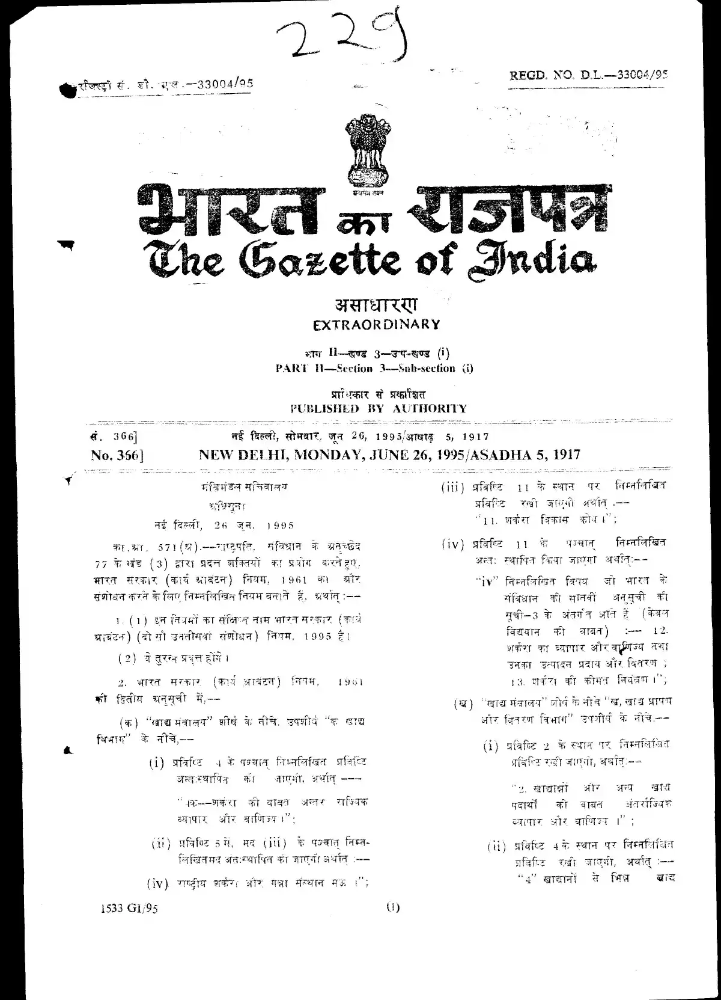
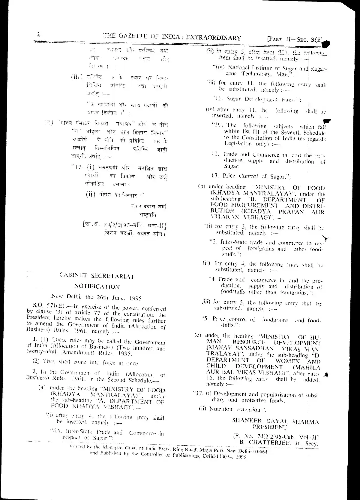

Amendment #229 (S.O. 571(E), 1995)
8 changes: 0 to the First Schedule, 8 to the Second Schedule. 7 applied1 not applied
The order, page by page
Page 1 of 2

Page 2 of 2

12345678after Schedule 2 › MINISTRY OF FOOD › DEPARTMENT OF FOOD › entry 4
- 4A. Inter-State Trade and Commerce in respect of Sugar.":
applied at schedule 2 › ministry MINISTRY OF FOOD › department A › group_heading I › entry 4A in the Rules after #229
after Schedule 2 › MINISTRY OF FOOD › DEPARTMENT OF FOOD › entry 5 › item 8
- iv. National Institute of Sugar and Sugarcane Technology. Mau.
not applied (the change could not be placed in the Rules as read; see How this document was read)
Schedule 2 › MINISTRY OF FOOD › DEPARTMENT OF FOOD › entry 11
- 11. Sugar Development Fund.":
applied at schedule 2 › ministry MINISTRY OF FOOD › department A › group_heading III › entry 11 in the Rules after #229
after Schedule 2 › MINISTRY OF FOOD › DEPARTMENT OF FOOD › entry 11
- TV. The following subjects which fal! within list II of the Seventh Schedule to the Constitution of India (as regards Legislation only) :--
- 12. Trade and Commerce in, and the production. supply and and distribution of Sugar.
- 13. Price Control of Sugar.
applied at schedule 2 › ministry MINISTRY OF FOOD › department A › group_heading III › entry 11 in the Rules after #229
Schedule 2 › MINISTRY OF FOOD › DEPARTMENT OF FOOD PROCUREMENT AND DISTRI- BUTION › entry 2
- 2. Inter-State trade and commerce in respect of foodgrains and other foodstuffs.
applied at schedule 2 › ministry MINISTRY OF FOOD › department B › group_heading I › entry 2 in the Rules after #229
Schedule 2 › MINISTRY OF FOOD › DEPARTMENT OF FOOD PROCUREMENT AND DISTRI- BUTION › entry 4
applied at schedule 2 › ministry MINISTRY OF FOOD › department B › group_heading II › entry 4 in the Rules after #229
Schedule 2 › MINISTRY OF FOOD › DEPARTMENT OF FOOD PROCUREMENT AND DISTRI- BUTION › entry 5
- 5. Price control of foodgrains and foodstuffs.":
applied at schedule 2 › ministry MINISTRY OF FOOD › department B › group_heading II › entry 5 in the Rules after #229
after Schedule 2 › MINISTRY OF HU- MAN RESOURCE DEVELOPMENT › DEPARTMENT OF WOMEN AND CHILD DEVELOPMENT › entry 16
- 17.
- i. Development and popularisation of subsidiary and protective foods.
- ii. Nutrition extension.
applied at schedule 2 › ministry MINISTRY OF HUMAN RESOURCE DEVELOP- MENT › department E › entry 17 in the Rules after #229
How this document was read
Known issues
| Change | Issue | Known as |
|---|---|---|
| 2 | change 2: no item 8 under schedule 2 › ministry MINISTRY OF FOOD › department A › group_heading III › entry 5 | Items |
From the Government of India (Allocation of Business) Rules, 1961 and their amendments, as published by the Cabinet Secretariat (cabsec.gov.in), read by orgpedia. The readings of the older scanned gazettes have known gaps.